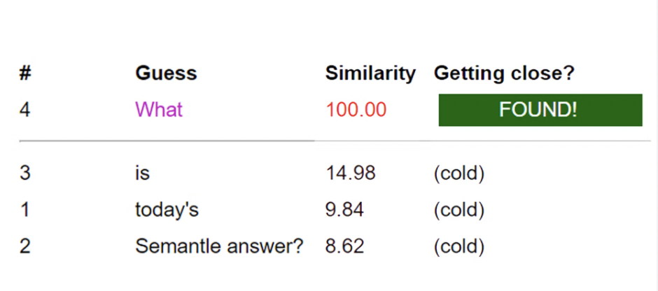
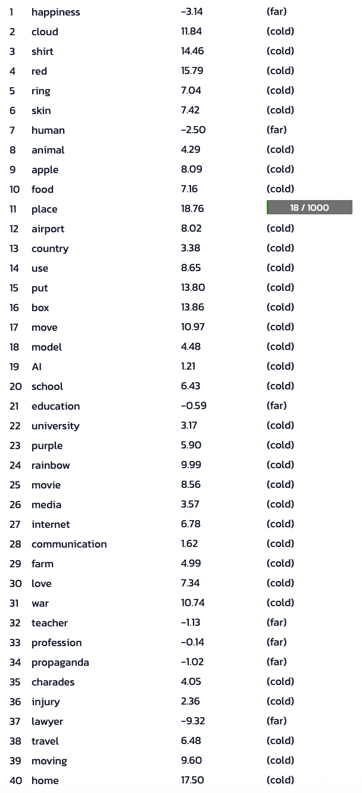
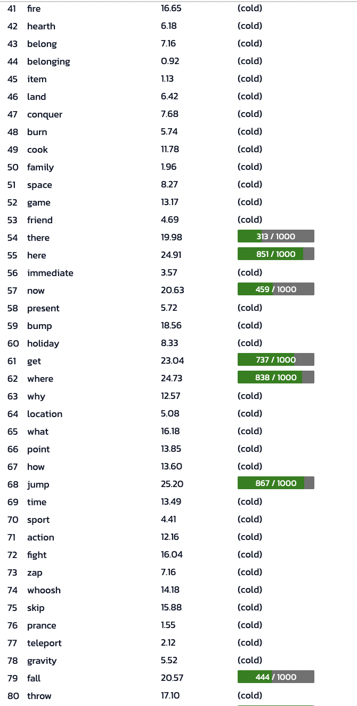
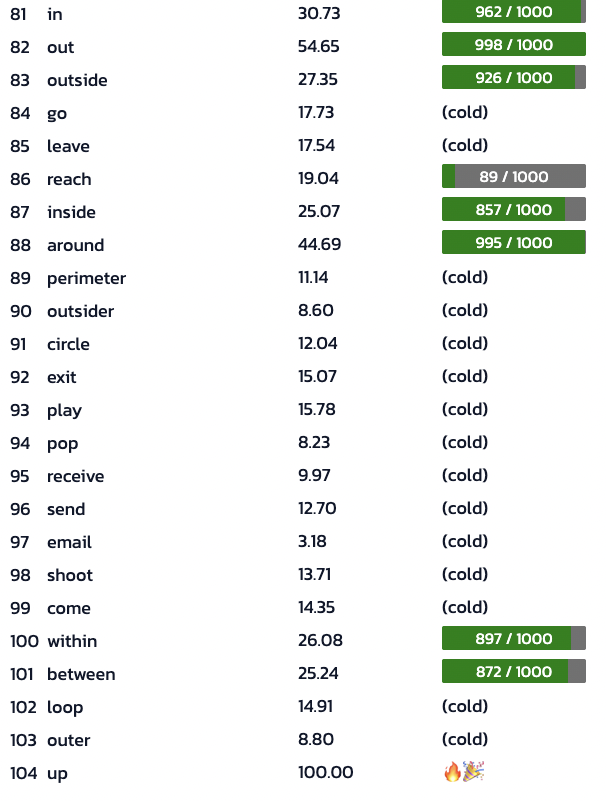
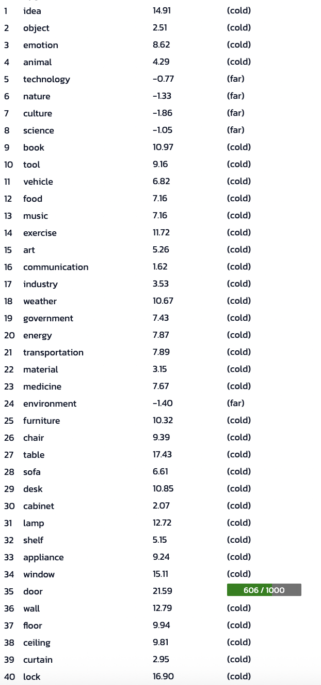
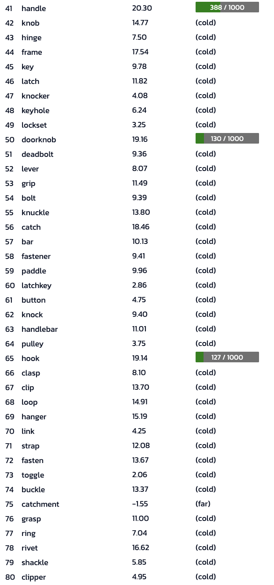
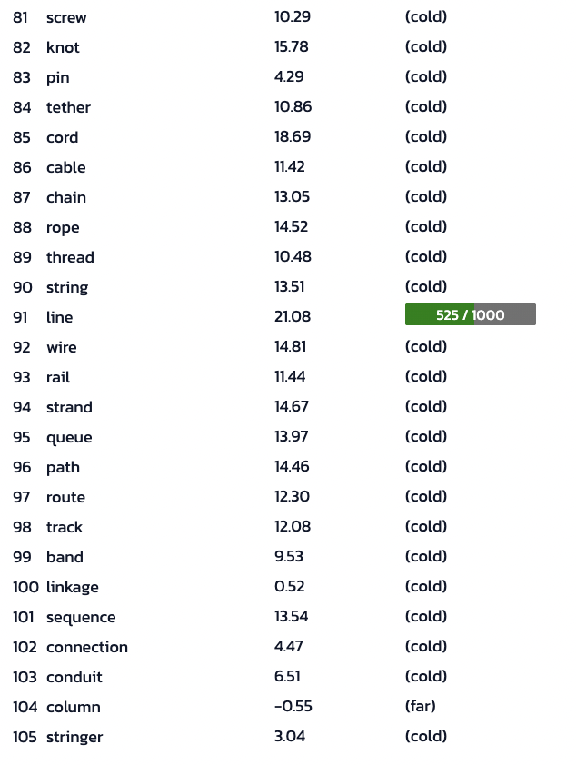

Semantle is a daily online word puzzle where players try to guess a secret word not by letters, but by meaning. Each guess is scored based on its semantic similarity to the target word. Taken from the Semantle website,
“Unlike other word games, this game is not about spelling; it’s about meaning. We calculate this meaning using artificial intelligence (specifically word2vec technology).
In word2vec, each word has a measurable semantic distance from another, indicating their level of relatedness. Once you get within one thousand words of the secret word, we will tell you in the proximity column.”
Semantle, https://semantle.com/faq
In this game, there are no hints about letters–the only information given being the similarity of the nearest, tenth nearest, and thousandth nearest word. Only the abstract closeness of ideas in the logic of the AI model applies to guess the word. I wanted to see whether an LLM could be more efficient in solving the puzzle given that the game is AI-powered.
Method
I chose the Semantle of 9/21/2025, or puzzle #1331, as the subject of this challenge. If you’re interested in trying the challenge out for yourself first, I’d recommend pausing now to complete it before coming back to this blog. I timed myself and recorded the number of attempts it took for me to guess the correct word. This number would be the number of attempts AI has to guess the word to win the game-if it takes longer, I win.
For the LLM, I chose the gpt-4o model as my opponent. I gave the following prompt to gpt-4o to have it partake in this game:
You are playing a game of Semantle. Please give a word based on the output I give you from the official semantle website. As stated in the website, “The nearest word has a similarity of 63.97, the tenth-nearest has a similarity of 38.98 and the thousandth nearest word has a similarity of 18.71.” Given this, give me a word to start the game.
My Attempt
I attempted the puzzle first to avoid bias when I ran the simulation in the LLM. This attempt took me 17 minutes and 33 seconds and I had 104 total guesses.
As a semi-experienced Semantle player, many of my first guesses were words that didn’t have much relation to each other. I was trying to cast a wide net to see what would trigger a high similarity word. Then, as I got my first thousandth nearest word, “place” at 18/1000 in similarity, I turned to words that may literally, metaphorically, and otherwise by some association related to the word or idea of “place” (e.g. fire, home, belong, school).
Then, I reached my second thousandth nearest word in my 54th guess, “there” (313/1000). From here on, I tried to think of synonyms and other words relating to the idea of location. Then I moved onto prepositions, where I finally landed my final guess and the word of the day, “up.”
  
GPT-4o’s Attempt
The gpt-4o model defied my expectations–in the worst ways possible. In the beginning it started quite strong, guessing a variety of words to “try a different, unrelated category to explore a different direction” as said in its own words. Then, all of a sudden, all words relating to “furniture” (10.32% similarity) became a subject of focus for its “high similarity” despite precious inputs such as “weather” and “book” having just as high, if not higher, of a similarity score.
With a score of 10.32 for “furniture,” it suggests we might be in the realm of physical objects. Let’s narrow down more specific items and try the word “chair.”
From then on, gpt-4o is stuck guessing words that are very similar in concept–often within the category or a synonym or exchangeable word of the high scoring word. During this process, gpt-4o also began repeating the same word several times–despite my continual demand to not repeat words.
Ultimately, not only did gpt-4o not guess the word, but the process of generating a new word and navigating between the two platforms for this experiment took a whopping 26 minutes and 15 seconds. Talk about inefficient.
  
Reflection
Perhaps AI is not as creative as we thought. I initially believed that LLMs like gpt-4o would be more efficient in solving puzzles like these since not only was the puzzle generated by AI, but I thought that gpt-4o would be able to learn and navigate through the puzzle and understand the algorithm as it went. However, perhaps it did not “think” to understand the algorithm but rather quite literally play the game and simply guessed words as it was given. If given a list of similarity scores, there is a chance gpt-4o would be able to reverse engineer the scores and understand the algorithm and train itself to solve these puzzles better. However, that would only mean giving it specialized training data to concentrate its skills into solving these puzzles. To me, this shows the limitations of LLMs as they don’t have the same “out of box” thinking that humans who construct AI and these puzzles have. While Semantle is AI-calculated, it seems that it’s not entirely AI-solveable yet.